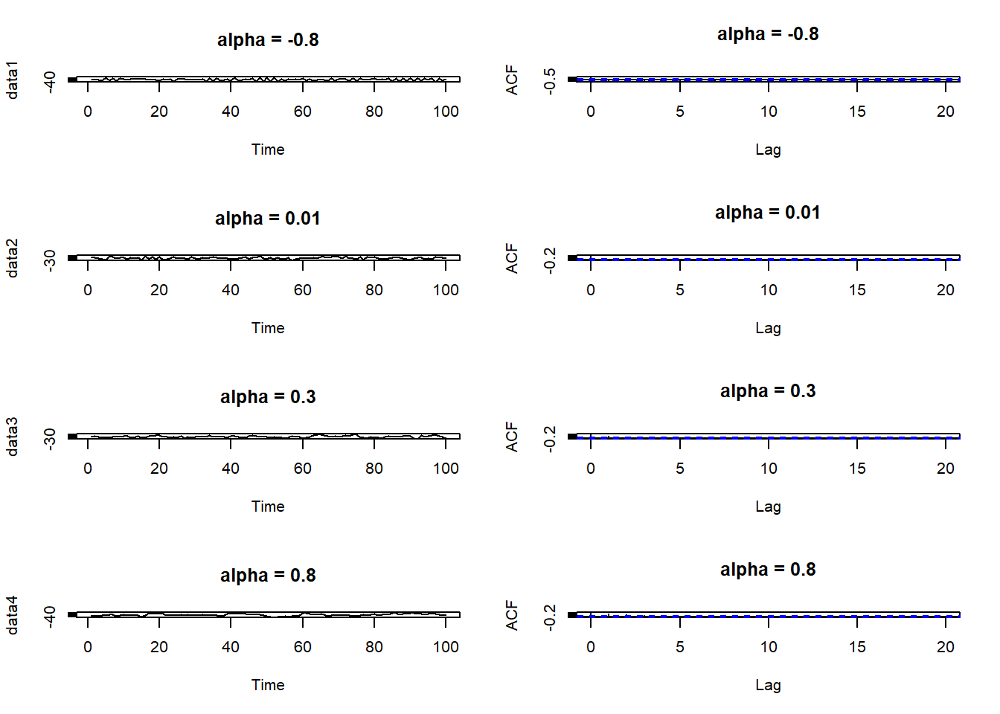

3 Chapter 3: Autoregressive processes
\(Z_t\) is purely random with mean zero and variance \(\sigma_z^2\)
3.1 Definition
An Autoregressive process of order \(p\), denoted \(AR(p)\), is given by \[X_{t}=\alpha_{1}X_{t-1}+\ldots+\alpha_{p}X_{t-p}+Z_{t}\] Where we assume \(X_{0}=X_{-1}=\ldots=X_{1-p}=0\)
Essentially regress \(X_t\) to its own past values
3.2 First order Autoregressive process
An \(AR(1)\) process is given by \[X_{t}=\alpha X_{t-1}+Z_{t}\] ### Mean
\[E(AR(1))=0\]
3.2.1 Variance
If \(|\alpha|\geq1\) then \(Var[X_t]=\infty\) If \(|\alpha|\lt1\) then \(\alpha^2\lt1\), and:
\[\sum_{j=0}^{\infty}\alpha^{2j}=1+\alpha^{2}+\alpha^{4}+\alpha^{6}+\ldots~=~\frac{1}{1-\alpha^{2}}\]
So we have:
\[\mathrm{Var}[X_{t}]=\sigma_{z}^{2}\sum_{j=0}^{\infty}\alpha^{2j}=\frac{\sigma_{z}^{2}}{1-\alpha^{2}} \]
3.2.2 Examples

3.3 \(AR(p)\) process
is given by \[X_{t}=\alpha_{1}X_{t-1}+\ldots+\alpha_{p}X_{t-p}+Z_{t} \]
\(Z_t\) can be written as:
\[\begin{eqnarray} X_{t}&=&\alpha_{1}X_{t-1}+\ldots+\alpha_{p}X_{t-p}+Z_{t}\nonumber\\ X_{t}-\alpha_{1}X_{t-1}-\ldots-\alpha_{p}X_{t-p}&=&Z_{t}\nonumber\\ (1-\alpha_{1}B-\alpha_{2}B^{2}-\ldots-\alpha_{p}B^{p})X_{t}&=&Z_{t}\nonumber\\ \phi(B)X_{t}&=&Z_{t}\nonumber \end{eqnarray} \]
where \(B\) is the backshift operator
3.3.1 Mean
\[E[AP(p)] = 0\]
3.3.2 Stationarity
We calculate the variance and autocorrelation function conditional on the process being stationary:
Theorem
AR(p) written as \(\phi(B)X_{t}=Z_{t}\) where \(\phi(B)\) is the characteristic polynomial \(\phi(B)=1-\alpha_{1}B-\alpha_{2}B^{2}-\ldots-\alpha_{p}B^{p}\)
Then the process is stationary if the roots of the characteristic equation \[\phi(B)=1-\alpha_{1}B-\alpha_{2}B^{2}-\ldots-\alpha_{p}B^{p}=0\] have modulus greater than 1, i.e. they lie outside the unit circle. Here we consider \(B\) as the variable of the polynominal equation
3.3.3 Variance
\[\mathrm{Var}[X_{t}]=\sigma^{2}_{z}+\sum_{\tau=1}^{p}\alpha_{\tau}\gamma_{\tau} \] ### Autocorrelation Function
Using Yule-Walker equation:
\[\rho_{1}=\frac{\alpha_{1}}{1-\alpha_{2}}.\]
\[\rho_{2}=\alpha_{1}\rho_{1}+\alpha_{2}\rho_{0}=\frac{\alpha_{1}^{2}}{1-\alpha_{2}}+\alpha_{2}\]